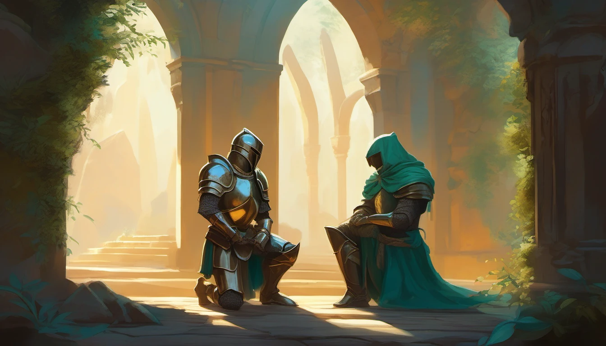
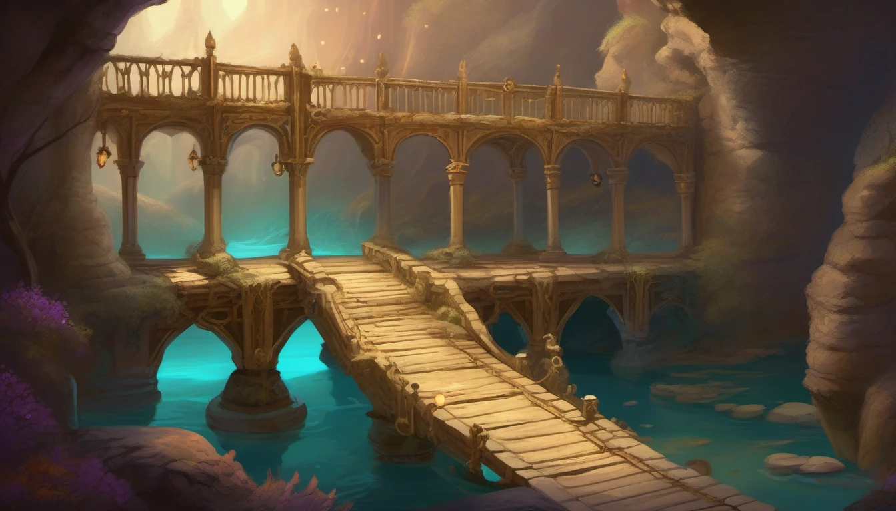

The story so far
Three chapters of the Crystalforge
The lane has a history. This is the part the five still argue about.
Editorial fiction — the chronicles are a story about the world, separate from the gameplay.
The Crystalforge
The Crystalforge was never a forge of metal. The Masons who raised it grew crystal the way gardeners grow trees: from two seeds, planted on either side of a ravine, fed with light for four hundred years. The seeds became the two hearths, one at each end of an ivory bridge, and the bridge became the only road between them. Then the Masons left, and nobody agrees why.
The garden took the ruin back and kept its colours: ivory stone, bronze gone green-gold, turquoise light under the moss, amber sap in the cracks. Two smaller crystals still stand off the bridge, the North Court and the South Court, and still do what they were built to do: the North sharpens whatever holds it, the South quickens.
Legend says whoever puts out the other hearth inherits the forge and everything it ever made. Five have come to collect. None of them wants the same thing.
-

The Count
Slab 406, filed as ruin, has moved again. Three drones are down; two are back; the ledger is still open. SW4RM has filed a new category for the slab, and for nothing else in the world: unclosed.
The lane is quiet the way a held count is quiet, and at the far end of the bridge someone is walking toward it.
-

The Breath
At the South Court the EmberKnight meets the Bog Maw. The guard holds for two seconds, falls against the quickened crystal, and stands up with someone else's breath in his chest.
Under the arch, Tessera clicks a stopwatch. "I could give it all back to him."
-

The Beat
Tessera sets three traps on the bridge, and the five come to them all at once. The North crystal beats, and every thirty seconds the two hearths march out their ivory soldiers in fours — the same cadence the game already has.
One lane. Five reasons to fight.